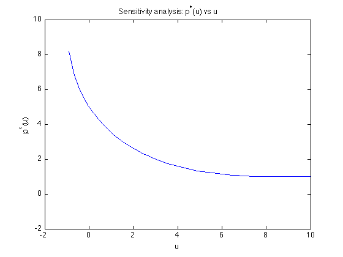

Exercise 5.1d: Sensitivity analysis for a simple QCQP
fprintf(1,'Computing p_star(u)...\n ');
u = linspace(-0.9,10,50);
p_star = zeros(1,length(u));
for i = 1:length(u)
disp(['for u = ' num2str(u(i))]);
cvx_begin quiet
variable x(1)
minimize ( quad_form(x,1) + 1 )
quad_form(x,1) - 6*x + 8 <= u(i);
cvx_end
p_star(i) = cvx_optval;
end
fprintf(1,'Done! \n');
plot(u,p_star)
axis([-2 10 -2 10])
xlabel('u');
ylabel('p^*(u)')
title('Sensitivity analysis: p^*(u) vs u');
Computing p_star(u)...
for u = -0.9
for u = -0.67755
for u = -0.4551
for u = -0.23265
for u = -0.010204
for u = 0.21224
for u = 0.43469
for u = 0.65714
for u = 0.87959
for u = 1.102
for u = 1.3245
for u = 1.5469
for u = 1.7694
for u = 1.9918
for u = 2.2143
for u = 2.4367
for u = 2.6592
for u = 2.8816
for u = 3.1041
for u = 3.3265
for u = 3.549
for u = 3.7714
for u = 3.9939
for u = 4.2163
for u = 4.4388
for u = 4.6612
for u = 4.8837
for u = 5.1061
for u = 5.3286
for u = 5.551
for u = 5.7735
for u = 5.9959
for u = 6.2184
for u = 6.4408
for u = 6.6633
for u = 6.8857
for u = 7.1082
for u = 7.3306
for u = 7.5531
for u = 7.7755
for u = 7.998
for u = 8.2204
for u = 8.4429
for u = 8.6653
for u = 8.8878
for u = 9.1102
for u = 9.3327
for u = 9.5551
for u = 9.7776
for u = 10
Done!
